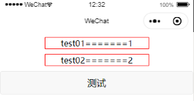
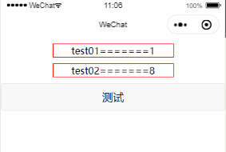
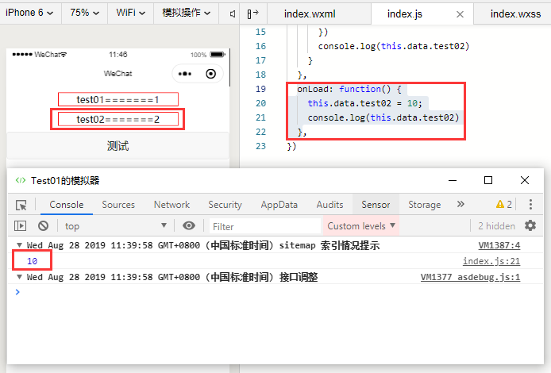
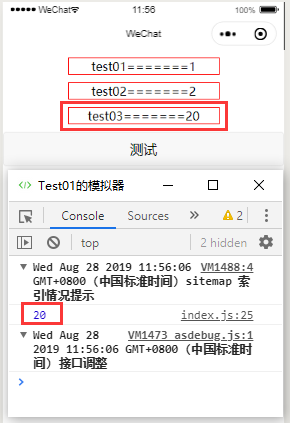

前言：微信小程序中经常需要用到this.setData({})把变量值渲染到视图层，那到底什么是this.setData，如何使用？需要注意哪些？作为一个初学者，分享一点我的经验，希望大家批评指正。
介绍：setData函数主要用于将逻辑层数据发送到视图层，同时对应的改变this.data.x的值。
参数：Object 以 key : value 的形式表示，将 this.data 中的 key 对应的值改变成 value。
使用：先给出代码，wxss没有什么意义就不贴了
index.wxml
1 <view class="numview">test01======={{test01}}</view>
2 <view class="numview">test02======={{test02}}</view>
3 <button bindtap="testfun">测试</button>index.js
1 Page({
2 data: {
3 test01: 1,
4 test02: 2
5 },
6 testfun: function() {
7 var that = this;
8 if (this.data.test01 == 1) {
9 that.setData({
10 test02:8
11 })
12 console.log(this.data.test02)
13 }
14 },
15 onLoad: function() {},
16 })此时经过编译后模拟器的显示：

这里都容易理解，当点击了button按钮后，触发点击事件执行testfun函数，将test02设置为8，如图：

通过this.data.test02=8这种方式直接赋值可以吗，答案是不可以，看下面：

使用this.data.test02=10的结果不会渲染到前台页面中显示，但是后台已经改变，会造成前后台数据不一致。
我又想到是不是可以先通过this.data.test02=10赋值，再通过this.setData渲染呢？
1 onLoad: function() {
2 this.data.test02 = 10;
3 this.setData({
4 test02
5 })
6 }编译报错：test02 is not defined;
为什么呢？再进行一项测试：
1 onLoad: function() {
2 this.data.test02 = 10;
3 var test03 = 20;
4 this.setData({
5 test03
6 })
7 console.log(this.data.test03)
8 }编译后显示：

发现了什么？我个人觉得是这样的：
一、this.setData中设置的key如果只有key没有value，则从所在函数内找这个变量，找到之后渲染到前台指定位置。
（1）如果Page对象的data中没有定义该key，则setData自动创建，这个可以从打印结果中发现（this.data.test03，data中没有定义）。
（2）如果Page对象的data中已经定义该变量，则修改data中原变量的值。
二、this.setData中设置的key如果有key有value，直接渲染到前台并修改原data中的数据。
注意事项：
上面演示的使用说明也算是注意事项吧，理解透彻才能运用自如，避免数据混乱。
另外给出官方的setData建议：https://developers.weixin.qq.com/miniprogram/dev/framework/performance/tips.html
常见的 setData 操作错误
1. 频繁的去 setData
在我们分析过的一些案例里，部分小程序会非常频繁（毫秒级）的去setData，其导致了两个后果：
Android 下用户在滑动时会感觉到卡顿，操作反馈延迟严重，因为 JS 线程一直在编译执行渲染，未能及时将用户操作事件传递到逻辑层，逻辑层亦无法及时将操作处理结果及时传递到视图层；
渲染有出现延时，由于 WebView 的 JS 线程一直处于忙碌状态，逻辑层到页面层的通信耗时上升，视图层收到的数据消息时距离发出时间已经过去了几百毫秒，渲染的结果并不实时；
2. 每次 setData 都传递大量新数据
由setData的底层实现可知，我们的数据传输实际是一次 evaluateJavascript 脚本过程，当数据量过大时会增加脚本的编译执行时间，占用 WebView JS 线程，
3. 后台态页面进行 setData
当页面进入后台态（用户不可见），不应该继续去进行setData，后台态页面的渲染用户是无法感受的，另外后台态页面去setData也会抢占前台页面的执行。